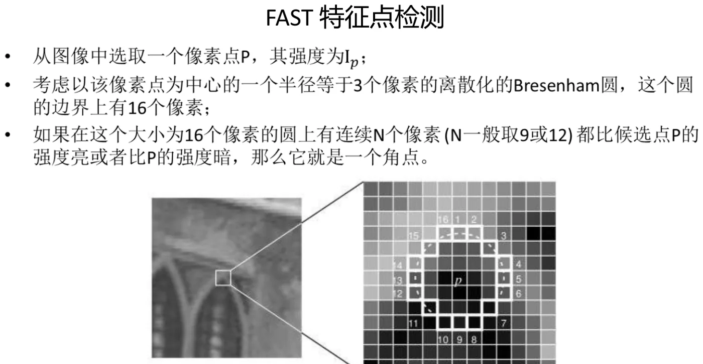
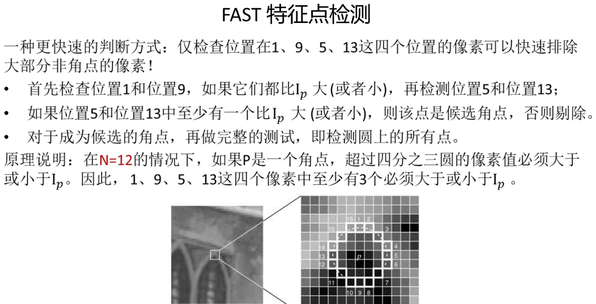
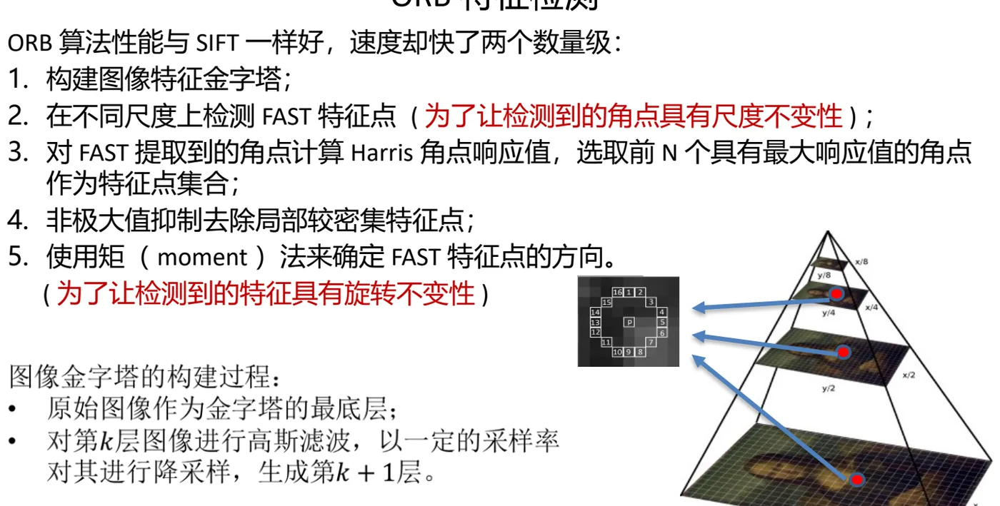
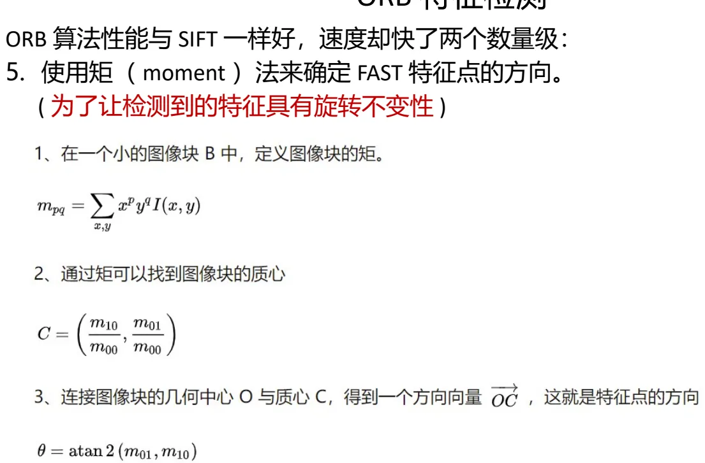

计算机视觉 · 第 4 章 特征检测与匹配
4.6 快速检测：FAST 与 ORB
前一节的收尾问题在这里得到回答：怎样在保证可用的前提下把检测与描述做快。课件给出两个算子——FAST 用「圆周上连续多少个像素比中心亮／暗」这一条极简判据换取速度，并用「只查 4 个点」的技巧把候选筛得更快；ORB 则在 FAST 的基础上补回尺度与旋转不变性（金字塔 + 矩法定方向），把精度做到与 SIFT 相当、速度却快了两个数量级。这一节篇幅最短，但它是这套方法真正落地的形态。
1. FAST 特征点检测：一条判据换速度
FAST 的判据只用像素之间的明暗比较，不算梯度、不做卷积，所以快。课件给出的定义是：
- 从图像中选取一个像素点 P，其强度为 Ip；
- 考虑以该像素点为中心、一个半径等于 3 个像素的离散化 Bresenham 圆，这个圆的边界上有 16 个像素；
- 如果在这个大小为 16 个像素的圆上，有连续 N 个像素（N 一般取 9 或 12）都比候选点 P 强度亮，或者都比 P 的强度暗，那么 P 就是一个角点。

这个判据的巧妙之处在于它不描述「角点长什么样」，而是描述「角点周围必然出现什么现象」：角点是一块区域里灰度急剧转折的地方，绕它走一圈，强度必然一会儿高于它、一会儿低于它，而且高低各自会连成一段。于是「一圈里有没有连续 N 个同向的像素」就成了检测条件——这也是 4.2 节所说的「在任何方向上移动窗口都应该在强度上产生很大的变化」的离散版本。
更快的判断：只看 4 个点
逐个检查 16 个像素还是慢。课件给出的加速办法是：仅检查位置在 1、9、5、13 这四个位置的像素，就可以快速排除大部分非角点的像素：
- 首先检查位置 1 和 9，如果它们都比 Ip 大（或者都小），再检测位置 5 和 13；
- 如果位置 5 和 13 中至少有一个比 Ip 大（或者小），则该点是候选角点，否则剔除；
- 对于成为候选的角点，再做完整的测试，即检测圆上的所有点。
课件的原理说明是：在 N = 12 的情况下，如果 P 是一个角点，超过四分之三圆的像素值必须大于或小于 Ip，因此 1、9、5、13 这四个像素中至少有 3 个必须大于或小于 Ip。1、9、5、13 正好把圆周四等分，任意连续 12 个像素（即 3/4 圈）必然覆盖其中至少 3 个——所以「4 个里不足 3 个同向」就可以直接判非角点。这是一次用几何约束换掉大量像素比较的典型优化。

2. ORB 特征检测：把不变性补回来
FAST 快，但只比明暗，因此既没有尺度概念、也没有方向概念。ORB 的做法是保留 FAST 的检测、把缺的两样补上。课件的总结是：ORB 算法性能与 SIFT 一样好，速度却快了两个数量级，具体做法有五条：
- 构建图像特征金字塔；
- 在不同尺度上检测 FAST 特征点（为了让检测到的角点具有尺度不变性）；
- 对 FAST 提取到的角点计算 Harris 角点响应值，选取前 N 个具有最大响应值的角点作为特征点集合；
- 非极大值抑制去除局部较密集特征点；
- 使用矩（moment）法来确定 FAST 特征点的方向（为了让检测到的特征具有旋转不变性）。

注意第 2 条与第 3 条的配合：第 2 条把 4.3 节的思路接了过来——不再只在一个尺度上找 FAST，而是在金字塔的每一层都找，于是同一物理特征可以在不同尺度上被检测到，尺度不变性就回来了。而第 3 条又把 4.2 节的 Harris 请了回来：FAST 只告诉「这是角点」，没告诉「这个角点有多强」，于是用 Harris 响应值排序，只保留响应最大的前 N 个，既控制了特征数量，也提高了质量。这种「几种算子各取所长、拼在一起」的做法，在本章里出现了不止一次。
课件也说明了金字塔本身怎么建：原始图像作为金字塔的最底层；对第 k 层图像进行高斯滤波，以一定的采样率对其进行降采样，生成第 k+1 层。层数越高图像越小，对应的结构尺度越大。
用矩（moment）法确定方向
最后一步是给特征点定方向，好让描述子能够跟着旋转一起转回去。课件给出的三步是：
- 在一个小的图像块 B 中，定义图像块的矩：mpq = Σx,y xp yq I(x, y)；
- 通过矩找到图像块的质心：C = ( m10/m00 , m01/m00 )；
- 连接图像块的几何中心 O 与质心 C，得到一个方向向量 OC，这就是特征点的方向：θ = atan2(m01, m10)。

直觉上讲，质心偏向哪一侧，说明那一侧的「重量」（灰度）更大，于是 O→C 就给出了这块区域的主方向。有了这个角度，描述子就可以先把窗口旋转到同一朝向再做统计——这样图像旋转时，描述子基本不变。
3. 本章的收束：一条从慢到快的路线
把 4.2 到 4.6 连起来看，本章其实是在三对矛盾之间反复权衡：
- 位置 vs 尺度：Harris 解决了「哪些位置适合做关键点」但对尺度敏感；LoG/DoG 把特征点升维成 (x, y, σ)，补上尺度。
- 简单 vs 独特：像素值直接排列最简单，却经不起微小移动；SIFT 用 128 维的方向梯度直方图换来独特与稳定。
- 精度 vs 速度：SIFT 精度好但慢；FAST 用「一圈里连续 N 个同向像素」换速度；ORB 再把金字塔与矩法叠上去，用两个数量级的速度差换到与 SIFT 相近的性能。
课件在本章结尾给出了一篇 ORB 的参考资料（zhuanlan.zhihu.com/p/91479558），想动手实现的可以对照阅读。
本节小结
- FAST 的判据：以像素 P 为中心、半径 3 的离散化 Bresenham 圆上有 16 个像素；若有连续 N 个（一般取 9 或 12）都比 Ip 亮或都比 Ip 暗，则 P 为角点。
- 快速排除：只查位置 1、9、5、13——先看 1 和 9 是否同向，再看 5 和 13 中是否至少一个同向，不满足即剔除，候选点才做完整测试。原理是 N = 12 时需要超过 3/4 圈同向，故这四点中至少 3 点同向。
- ORB 性能与 SIFT 一样好、速度快两个数量级，五步：建金字塔 → 多尺度上检测 FAST（尺度不变性）→ 按 Harris 响应值取前 N 个 → 非极大值抑制 → 矩法定方向（旋转不变性）。
- 金字塔的构建：原始图像为最底层，对第 k 层高斯滤波并降采样得到第 k+1 层。
- 矩法定方向：mpq = Σ xpyqI(x,y) → 质心 C = (m10/m00, m01/m00) → 连接几何中心 O 与质心 C 得方向，θ = atan2(m01, m10)。
- 本章三对矛盾：位置与尺度、简单与独特、精度与速度；Harris→LoG/DoG→SIFT→FAST/ORB 正是沿着这三条线逐步演进的。